Alenuihāhā Channel Marine Weather Briefing
Generated Sat 14 Nov 2026 06:30 HST (16:30 UTC) · built twice a day, about 06:30 and 18:30 HST · confirm each product's issue and valid times before relying on it
Channel outlook
Alenuihāhā Channel, built Sat 14 Nov 06:30 HSTNWS zone forecast
- Today20–25 kt East Northeast
- Tonight25–30 kt East Northeast
- Sunday25–30 kt East Northeast
Models (median)
- Mid-channel now20 kt
- Mid-channel, highest next 24 h26 kt Sun 05:00
- Mid-channel, highest next 48 h26 kt Sun 05:00
- Off Honokōhau, highest next 24 h7 kt Sat 14:00
Model agreement
- Last 6 RRFS runsRuns agree within 2 kt
- Chance of 30 kt+ mid-channel0% Mon 05:00
- REFS spread (next 48 h)± 3 kt
Model comparison · Wind maps · REFS maps · Zone forecasts · Pressure gradient
Sun & moon mid-channel Sat 14 Nov: sunrise 06:32 · sunset 17:43 · civil dusk 18:06 · waxing crescent, 25% lit · UV peak 7 (high) today more →
About this report
This automated marine weather briefing is generated using data from the following official sources:
- NWS Honolulu (HFO) coastal/offshore marine forecasts and AFD (via
tgftp.nws.noaa.gov). - NOAA Ocean Prediction Center (OPC) Pacific surface, 500 mb, and wind/wave analyses.
- NDBC buoys (e.g., 51000 and 51002) for pressure and wind observations.
- NOAA GFS 0.25° mean sea-level pressure (PRMSL) fields for synoptic and channel isobar analysis (downloaded through the NOMADS grib filter, 0.25° with a 1° fallback).
- NOAA/NESDIS STAR GOES‑18 Tropical West and HI sector geocolor imagery.
- ASCAT Coastal UHR scatterometer winds (12.5 km) for coastal wind detail.
- Hilo (91285) upper‑air soundings from the University of Wyoming (newest launches) and the Iowa Environmental Mesonet (older ones) for trade‑wind inversion detection; Skew‑T diagrams drawn from them.
- Model wind comparison: NOAA RRFS (deterministic runs and ensemble members) and REFS (NOMADS), the National Blend of Models (AWS), UH WRF (PacIOOS THREDDS), and the NWS Honolulu gridded forecast (
api.weather.gov). - Forecast verification (verify.html): ASCAT-B and -C 12.5 km coastal wind files (EUMETSAT OSI SAF / KNMI, via NASA PO.DAAC, found through NASA CMR) as the measurement; scored against them, the NWS zone forecasts (every issue, from the Iowa Environmental Mesonet archive), NBM (NOAA's AWS archive), RRFS, REFS and UH WRF runs kept by this briefing, the NOAA RRFS v1 retrospective runs (2023–24), the UH WRF archive at PacIOOS, and the NWS gridded forecast; the Hilo sounding before each pass for the inversion.
These sources are combined to provide a practical overview for the Alenuihāhā Channel, balancing large‑scale context (Pacific High, PRMSL) with local indicators (buoys, ASCAT, TWI). Time stamps are shown in both HST and UTC where applicable.
All data is pulled directly from official sources at the time of report generation. Click on any active link to view the most current data available.
How everything here is made, its sources, assumptions and limits, and the weather behind it: the guide.
Credits. Forecasts, charts, observations and model data from NOAA (National Weather Service, Ocean Prediction Center, NCEP, NDBC, NOS CO-OPS), which are not subject to copyright. Satellite imagery: NOAA / NESDIS Center for Satellite Applications and Research (STAR). ASCAT winds: Copyright 2026 EUMETSAT (EUMETSAT OSI SAF / KNMI). UH WRF data provided by PacIOOS (www.pacioos.org), which is a part of the U.S. Integrated Ocean Observing System (IOOS®), funded in part by National Oceanic and Atmospheric Administration (NOAA) Award #NA21NOS0120091. Hilo soundings: University of Wyoming and Iowa Environmental Mesonet. Maunakea discussion: Maunakea Weather Center, University of Hawaiʻi. Zone forecast archive: Iowa Environmental Mesonet. UV Index: US EPA / NOAA CPC. Map outlines: Natural Earth.
This report is intended to support weather study, learning, and awareness and is not a substitute for official forecasts or responsible decision-making.
Source summary
27 sources: 21 current · 1 late · 2 undated · 3 live. Ages update as you read; times are from each product itself.
All 27 sources with issue and valid times
| Source | Time | Age | Valid until | Status |
|---|---|---|---|---|
| Synoptic | ||||
| OPC surface / 500 mb / wind-wave charts Charts: 10 current, 5 late. Time shown is the newest analysis. | Valid Sat 14 Nov 2:00 AM HST (12:00Z) | 5 h ago | — | Late: newer issue overdue |
| High Seas Forecast (Metarea XII) | Issued Sat 14 Nov 1:45 AM HST (11:45Z) | 5 h ago | Superseded Sat 14 Nov 7:45 AM HST (17:45Z) | Current |
| HFO North Pacific surface analysis Loads from NOAA when you open the page. | — | — | Live | |
| Regional | ||||
| GOES-West satellite imagery Loads from NOAA when you open the page. | — | — | Live | |
| Honolulu Area Forecast Discussion | Issued Sat 14 Nov 3:33 AM HST (13:33Z) | 3 h ago | — | Current |
| Hawaiʻi Offshore Waters Forecast (40–240 nm) | Issued Sat 14 Nov 5:10 AM HST (15:10Z) | 1 h ago | Expires Sat 14 Nov 12:15 PM HST (22:15Z) | Current |
| Hawaiʻi Statewide Coastal Waters Forecast (to 40 nm) | Issued Sat 14 Nov 3:45 AM HST (13:45Z) | 3 h ago | — | Current |
| Maunakea Observatories Forecast Discussion | — | — | No time given | |
| Local marine zones | ||||
| Big Island Leeward Waters (PHZ123) | Issued Sat 14 Nov 3:44 AM HST (13:44Z) | 3 h ago | Expires Sat 14 Nov 4:15 PM HST (02:15Z) | Current |
| Alenuihaha Channel (PHZ121) | Issued Sat 14 Nov 3:44 AM HST (13:44Z) | 3 h ago | Expires Sat 14 Nov 4:15 PM HST (02:15Z) | Current |
| Big Island Windward Waters (PHZ122) | Issued Sat 14 Nov 3:44 AM HST (13:44Z) | 3 h ago | Expires Sat 14 Nov 4:15 PM HST (02:15Z) | Current |
| Maui County Windward Waters (PHZ117) | Issued Sat 14 Nov 3:44 AM HST (13:44Z) | 3 h ago | Expires Sat 14 Nov 4:15 PM HST (02:15Z) | Current |
| Maui County Leeward Waters (PHZ118) | Issued Sat 14 Nov 3:44 AM HST (13:44Z) | 3 h ago | Expires Sat 14 Nov 4:15 PM HST (02:15Z) | Current |
| Kamuela radar (PHKM) Loads from NOAA when you open the page. | — | — | Live | |
| Models | ||||
| RRFS extended run (NOAA) | Run Sat 14 Nov 2:00 AM HST (12:00Z) | 5 h ago | — | Current |
| REFS ensemble (NOAA) | Run Sat 14 Nov 2:00 AM HST (12:00Z) | 5 h ago | — | Current |
| RRFS ensemble members (NOAA) 11 answers per hour | Run Sat 14 Nov 2:00 AM HST (12:00Z) | 5 h ago | — | Current |
| National Blend of Models (NOAA) | Run Sat 14 Nov 5:00 AM HST (15:00Z) | 2 h ago | — | Current |
| UH WRF (PacIOOS) PacIOOS posts each run about a day late. | Run Wed 11 Nov 8:00 PM HST (06:00Z) | 2 days ago | — | Current |
| NWS Honolulu gridded forecast | Updated Sat 14 Nov 6:01 AM HST (16:01Z) | 29 min ago | — | Current |
| ASCAT coastal winds Pass times are printed on the image. | — | — | No time given | |
| ASCAT forecast verification 1,079 passes in the archive (782 scored), Jul–Aug 2023 · Jan–Feb 2024 · Apr–Jun 2024 · Sep 2025 – Nov 2026. | Observed Fri 13 Nov 9:33 AM HST (19:33Z) | 21 h ago | — | Current |
| Experimental | ||||
| Pacific High analysis (GFS) | Valid Sat 14 Nov 2:00 AM HST (12:00Z) | 5 h ago | — | Current |
| NDBC buoys 51000 / 51002 | Observed Sat 14 Nov 5:40 AM HST (15:40Z) | 50 min ago | — | Current |
| Station pressure gradient (NWS, Hawaiʻi Mesonet, NOAA tide gauge) | Observed Sat 14 Nov 4:00 AM HST (14:00Z) | 3 h ago | — | Current |
| Hilo sounding | Observed Sat 14 Nov 2:00 AM HST (12:00Z) | 5 h ago | — | Current |
| Sun and sky | ||||
| UV Index forecast (EPA) Today's hourly forecast; sun and moon times are computed, not downloaded. | — | — | Current | |
All sections
- Channel outlook
- Source summary: issue, valid and expiry times
- Synoptic Level: Pacific Ocean Basin
- Synoptic to Regional Level
- Local Level: Marine Forecast Zones
- Channel Wind Forecast: Model Comparison
- ASCAT Coastal Winds (UHR)
- Forecast Verification against ASCAT (separate page)
- Sun & Moon
- Experimental — Alenuihāhā Channel Wind Analysis
Synoptic Level: Pacific Ocean Basin
Latest Surface, 500 MB, and Wind/Wave Matrix (Ocean Prediction Center)
| Latest | 24 h | 48 h | 72 h | 96 h | |
|---|---|---|---|---|---|
| Surface AnalysisForecasts from the 12Z Sat 14 Nov run | 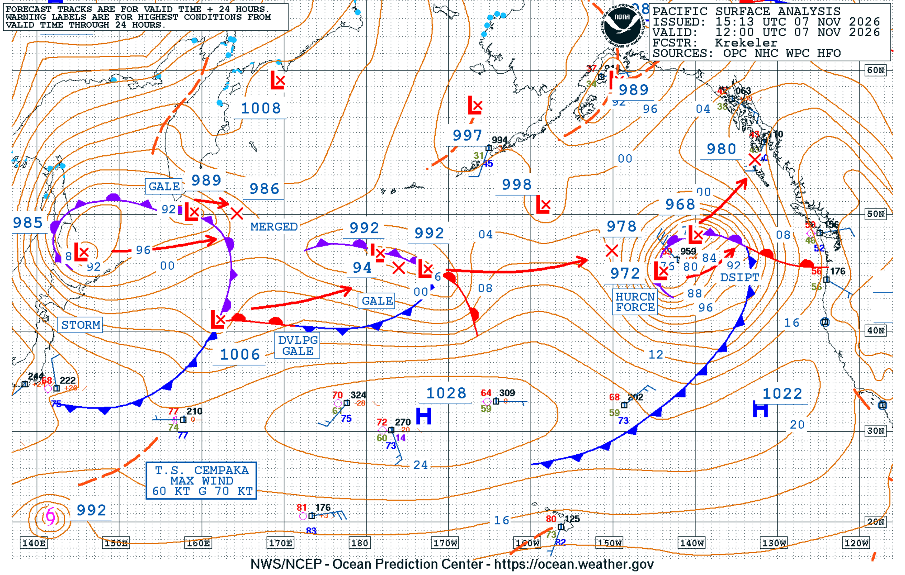 |
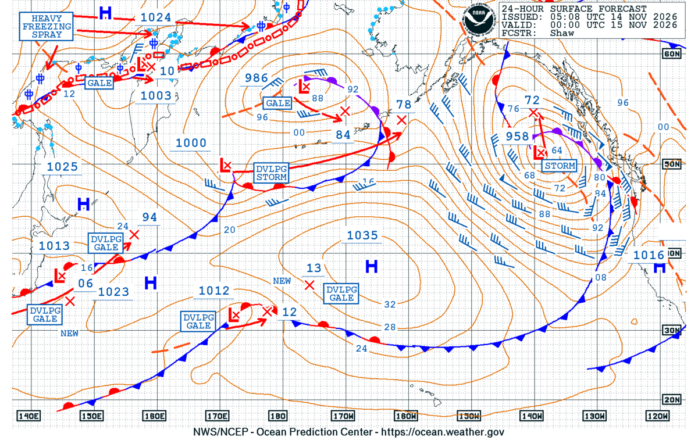 |
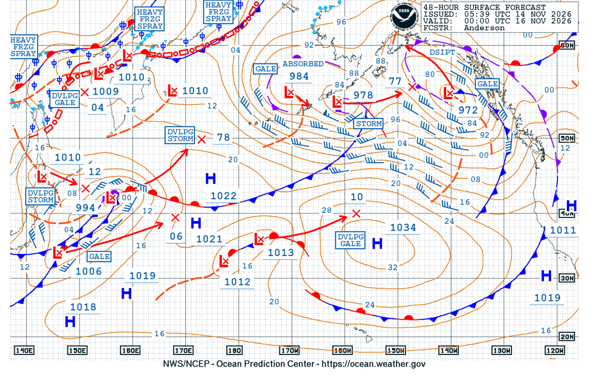 |
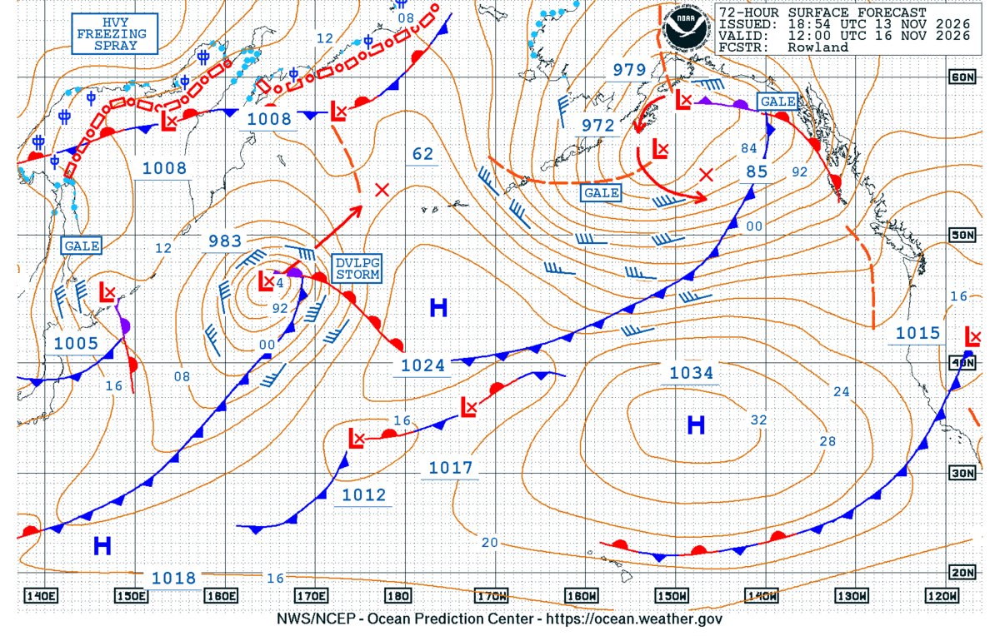 |
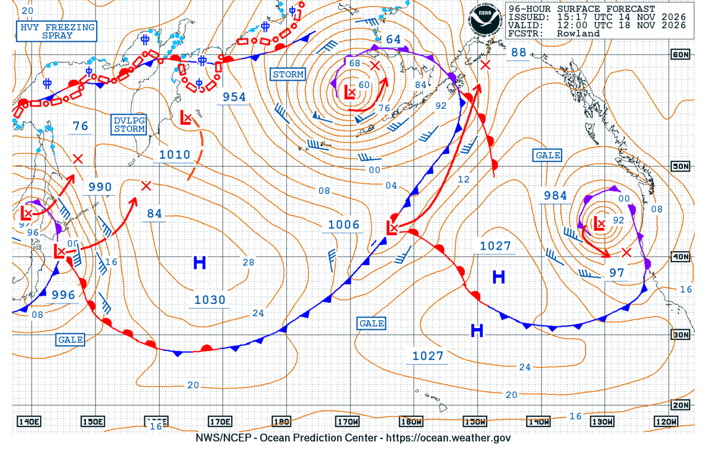 |
| 500 mbForecasts from the 00Z Sat 14 Nov run | 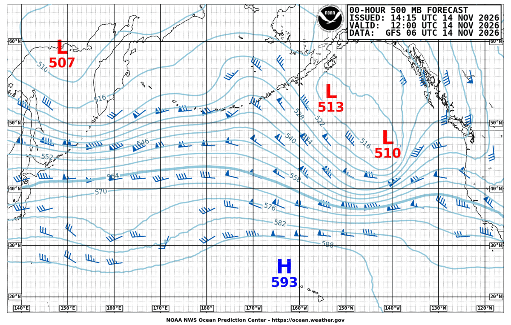 |
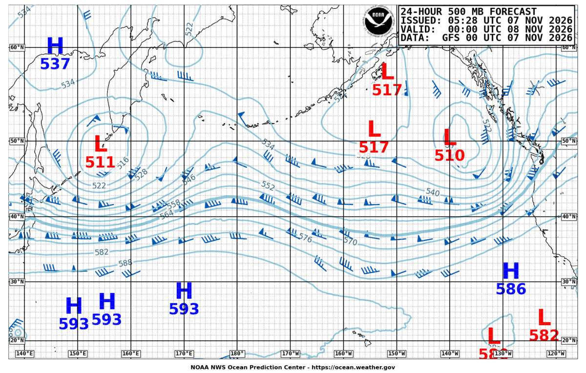 |
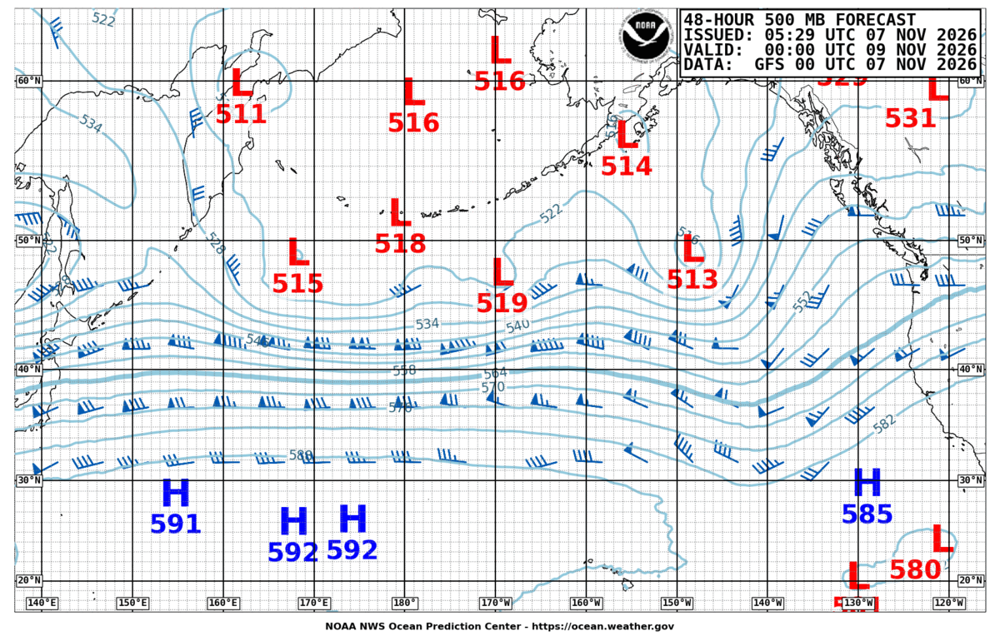 |
 |
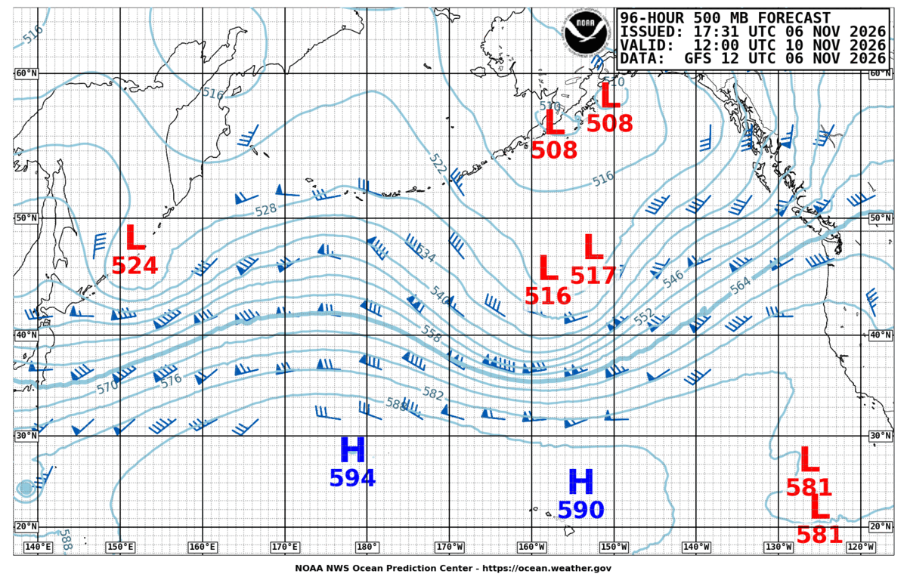 |
| Wind / WaveForecasts from the 00Z Sat 14 Nov run | 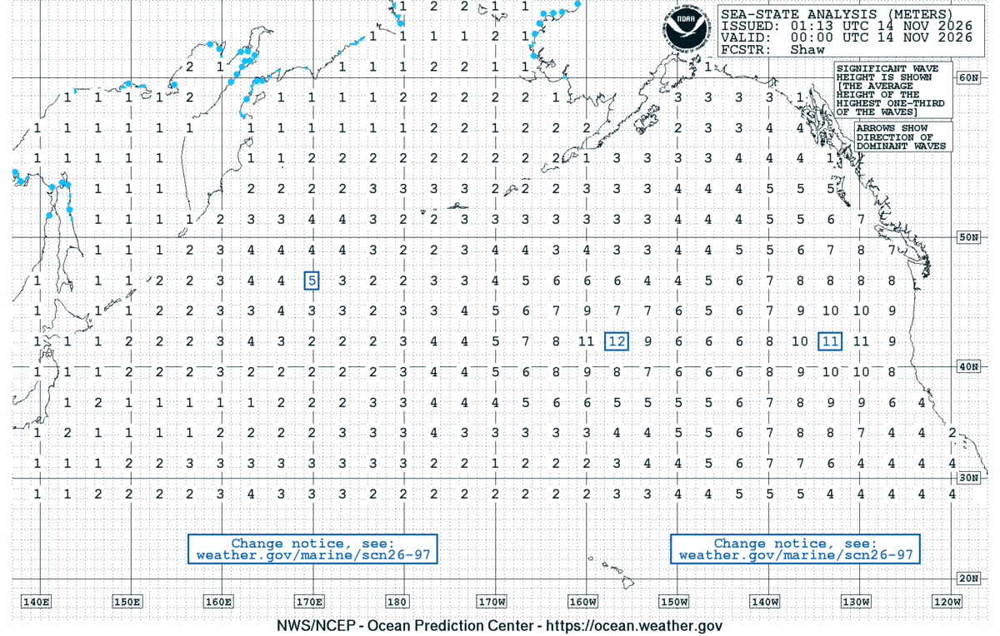 |
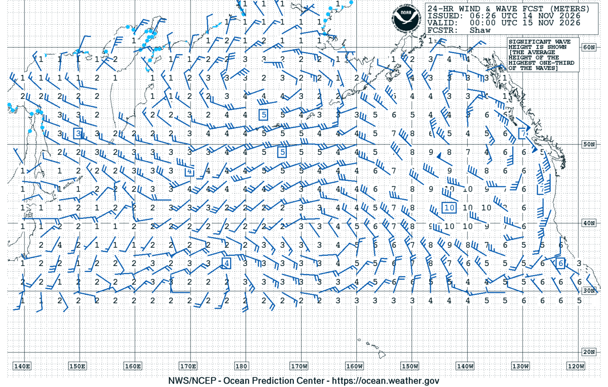 |
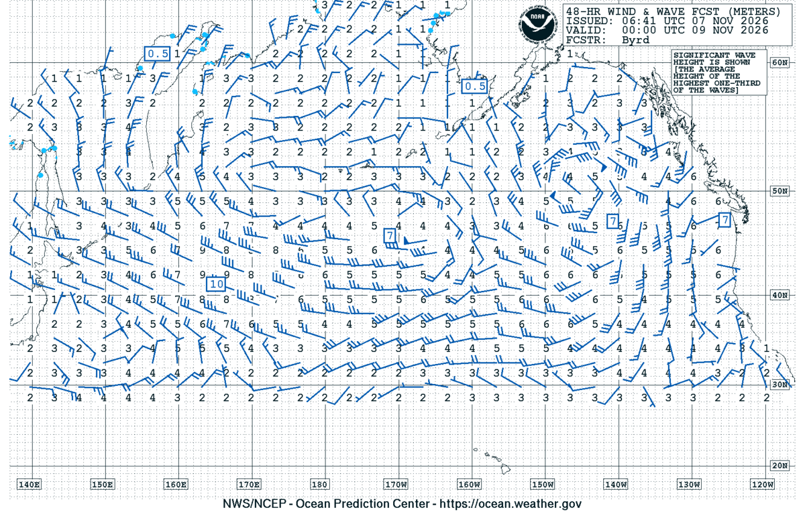 |
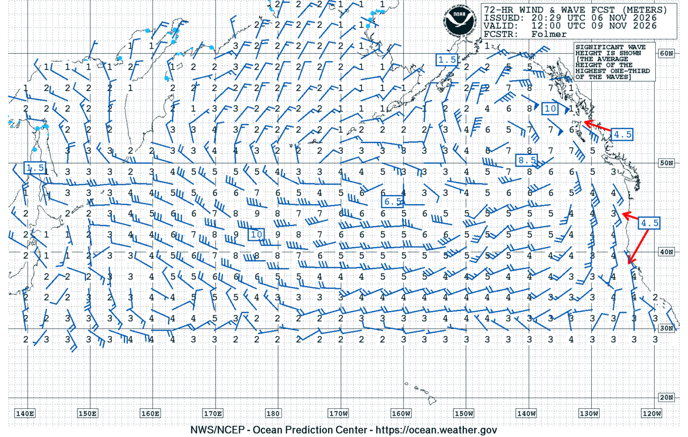 |
 |
NWS Honolulu North Pacific Surface Analysis (Latest)
The Honolulu forecasters' own surface analysis, next to OPC's: it reaches farther into the tropics, covering the ITCZ and the trade-wind belt around Hawaiʻi. Use it for the position and strength of the Pacific High and the fronts, troughs, lows and gales affecting the islands, and to check the automatic Pacific High analysis in the channel analysis section.

High Seas Forecast (Metarea XII)
CCODE/2:31:12:01:00/AOW+POR/NWS/CCODE SUPERSEDED BY NEXT ISSUANCE IN 6 HOURS SEAS GIVEN AS SIGNIFICANT WAVE HEIGHT...WHICH IS THE AVERAGE HEIGHT OF THE HIGHEST 1/3 OF THE WAVES. INDIVIDUAL WAVES MAY BE MORE THAN TWICE THE SIGNIFICANT WAVE HEIGHT. ONLY YOU KNOW THE WEATHER AT YOUR POSITION. REPORT IT TO THE NATIONAL WEATHER SERVICE. EMAIL US AT VOSOPS@NOAA.GOV(LOWERCASE). FOR ANY TROPICAL CYCLONE INFORMATION BEYOND 48 HOURS REFERENCE THE ASSOCIATED NWS TROPICAL CYCLONE FORECAST/ADVISORY (TCM). SECURITE PACIFIC S OF 67N AND N OF 30N E OF A LINE FROM THE BERING STRAIT TO 53N172E TO 50N180W TO 30N180W ALL FORECASTS VALID OVER ICE FREE FORECAST WATERS SYNOPSIS VALID 0600 UTC NOV 14. 24 HOUR FORECAST VALID 0600 UTC NOV 15. 48 HOUR FORECAST VALID 0600 UTC NOV 16. .WARNINGS. ...HURRICANE FORCE WIND WARNING... .LOW 47N145W 971 MB MOVING NE 25 KT. BETWEEN 120 NM AND 420 NM SW QUADRANT WINDS 50 TO 65 KT. SEAS 8 TO 13 M. ALSO WITHIN 480 NM S...600 NM SW...AND 420 NM W QUADRANTS WINDS 35 TO 50 KT. SEAS 4 TO 8.5 M. ELSEWHERE...EXCEPT WHERE OTHERWISE DESCRIBED...FROM 32N TO 50N BETWEEN 143W AND 173W WINDS 25 TO 35 KT. SEAS 3 TO 6.5 M. .18 HOUR FORECAST COMPLEX LOW WITH FIRST CENTER 50N138W 960 MB AND NEW SECOND CENTER 52N139W 961 MB. BETWEEN 120 NM AND 600 NM S AND SW QUADRANTS OF FIRST CENTER...BETWEEN 180 NM AND 720 NM SW AND W QUADRANTS OF SECOND CENTER...AND WITHIN 180 NM E OF A FRONT FROM SECOND CENTER TO 53N137W TO 51N131W TO 48N128W TO 43N128W WINDS 40 TO 55 KT. SEAS 5 TO 11 M...HIGHEST S AND SW OF FIRST CENTER. .24 HOUR FORECAST COMPLEX LOW WITH FIRST CENTER 51N136W 960 MB AND SECOND CENTER 53N140W 962 MB. BETWEEN 120 NM AND 720 NM SW QUADRANT OF FIRST CENTER...WITHIN 480 NM SW AND 420 NM W QUADRANTS OF SECOND CENTER...AND WITHIN 150 NM E OF A FRONT FROM 55N140W TO 53N134W TO 50N129W WINDS 40 TO 55 KT. SEAS 4 TO 9.5 M...HIGHEST S AND SW OF BOTH CENTERS. ALSO FROM 35N TO 59N E OF 161W WINDS 25 TO 40 KT. SEAS 2.5 TO 7.5 M...HIGHEST S OF FIRST CENTER. ELSEWHERE...EXCEPT WHERE OTHERWISE DESCRIBED...S OF 59N E OF 162W WINDS TO 25 KT. SEAS 2.5 TO 6.5 M. .48 HOUR FORECAST COMPLEX LOW WITH MEAN CENTER NEAR 58N143W 976 MB. WITHIN 600 NM SE QUADRANT WINDS 25 TO 40 KT. SEAS 5 TO 9 M. ELSEWHERE...EXCEPT WHERE OTHERWISE DESCRIBED...S OF 59N BETWEEN 122W AND 151W WINDS TO 25 KT. SEAS 3 TO 7.5 M...HIGHEST NEAR 40N133W. ...STORM WARNING... .24 HOUR FORECAST NEW LOW JUST W OF AREA NEAR 49N178E 994 MB. WITHIN 420 NM S AND SE QUADRANTS WINDS 25 TO 40 KT. SEAS 3 TO 4.5 M. .42 HOUR FORECAST COMPLEX LOW WITH MAIN CENTER NEAR 54N161W 978 MB. WITHIN 180 NM S AND SW QUADRANTS WINDS 35 TO 50 KT. SEAS 4 TO 7.5 M. .48 HOUR FORECAST COMPLEX LOW WITH MAIN CENTER NEAR 54N152W 978 MB. WITHIN 180 NM S AND SW QUADRANTS WINDS 35 TO 50 KT. SEAS 4 TO 8 M. ELSEWHERE...EXCEPT WHERE OTHERWISE DESCRIBED...WITHIN 660 NM SE AND S QUADRANTS WINDS 25 TO 35 KT. SEAS 2.5 TO 6 M. ...GALE WARNING... .LOW 56N149W 982 MB NEARLY STATIONARY THEN MOVING S AFTER 12 HOURS. BETWEEN 120 NM AND 720 NM SW AND W QUADRANTS WINDS 25 TO 35 KT. SEAS 2.5 TO 4 M. .24 HOUR FORECAST LOW AND CONDITIONS ABSORBED BY HURRICANE FORCE WIND WARNING ABOVE. ...GALE WARNING... .COMPLEX LOW WITH MAIN CENTER W OF AREA 55N173E 989 MB MOVING NE 25 KT. WITHIN 420 NM E AND SE QUADRANTS WINDS 25 TO 35 KT. SEAS 3 TO 4 M. .24 HOUR FORECAST COMPLEX LOW WITH MEAN CENTER NEAR 57N174W 985 MB. FROM 50N TO 61N W OF 157W WINDS 25 TO 40 KT. SEAS 2.5 TO 5.5 M...HIGHEST S OF MEAN CENTER. .48 HOUR FORECAST COMPLEX LOW WITH MAIN CENTER NEAR 55N166W 984 MB. BETWEEN 120 NM AND 360 NM S AND SW QUADRANTS WINDS 35 TO 45 KT. SEAS 3 TO 6.5 M. ELSEWHERE...EXCEPT WHERE OTHERWISE DESCRIBED...FROM 45N TO 59N BETWEEN 160W AND 178E WINDS 25 TO 35 KT. SEAS 2.5 TO 5 M. ...GALE WARNING... .24 HOUR FORECAST LOW W OF AREA NEAR 34N175E 1012 MB. FROM 32N TO 38N W OF 173W WINDS 20 TO 30 KT. SEAS 2.5 TO 4 M. .48 HOUR FORECAST COMPLEX LOW WITH MEAN CENTER NEAR 38N169W 1008 MB. FROM 32N TO 41N W OF 163W WINDS 25 TO 35 KT. SEAS 2.5 TO 4.5 M. .SYNOPSIS AND FORECAST. .FROM 30N TO 51N BETWEEN 121W AND 140W WINDS TO 25 KT. SEAS 4 TO 9.5 M...HIGHEST NEAR 41N128W. .24 HOUR FORECAST S OF 36N E OF 129W WINDS TO 25 KT. SEAS 4 TO 6.5 M. .48 HOUR FORECAST CONDITIONS S OF AREA. .COMPLEX LOW WITH MAIN CENTER 54N140W 975 MB MOVING NW 15 KT. FROM 50N TO 59N E OF 143W WINDS 20 TO 30 KT. SEAS 3 TO 6 M...HIGHEST SE OF CENTER. .24 HOUR FORECAST LOW AND CONDITIONS ABSORBED BY HURRICANE FORCE WIND WARNING IN WARNINGS SECTION ABOVE. .DENSE FOG. VSBY OCCASIONALLY LESS THAN 1 NM WITHIN 180 NM EITHER SIDE OF A LINE FROM 47N157W TO 48N140W...WITHIN 120 NM EITHER SIDE OF A LINE FROM 51N146W TO 59N156W...N OF 65N W OF ALASKA...AND FROM 51N TO 59N W OF 172W. .24 HOUR FORECAST DENSE FOG N OF 53N BETWEEN 142W AND 151W...N OF 65N W OF ALASKA...WITHIN 180 NM EITHER SIDE OF A LINE FROM 56N176E TO 58N176W TO 56N165W TO 53N156W...AND FROM 48N TO 54N W OF 178W. .48 HOUR FORECAST DENSE FOG FROM 51N TO 61N BETWEEN 146W AND 178W. .LIGHT FREEZING SPRAY NW OF A LINE FROM 60N178W TO 61N170W TO 64N165W. .24 HOUR FORECAST LITTLE CHANGE. .48 HOUR FORECAST LIGHT FREEZING SPRAY N OF A LINE FROM 58N178E TO 61N170W TO 57N158W. .FORECASTER ANDERSON. OCEAN PREDICTION CENTER. NWS NATIONAL HURRICANE CENTER MIAMI FL E PACIFIC FROM THE EQUATOR TO 30N E OF 140W AND 03.4S TO THE EQUATOR E OF 120W SYNOPSIS VALID 0600 UTC SAT NOV 14. 24 HOUR FORECAST VALID 0600 UTC SUN NOV 15. 48 HOUR FORECAST VALID 0600 UTC MON NOV 16. .WARNINGS. .NONE. .SYNOPSIS AND FORECAST. .WITHIN 23N112W TO 29N114W TO 30N140W TO 07N140W TO 13N120W TO 23N112W...INCLUDING SEBASTIAN VIZCAINO BAY AND WITHIN 60 NM OF SHORE...WINDS 20 KT OR LESS. SEAS 4.0 TO 5.5 M IN NW SWELL. .24 HOUR FORECAST WITHIN 18N106W TO 30N116W TO 30N140W TO 05N140W TO 04N128W TO 09N115W TO 18N106W...INCLUDING NEAR CABO CORRIENTES AND THE GULF OF CALIFORNIA AND SEBASTIAN VIZCAINO BAY AND WITHIN 60 NM OF SHORE...WINDS 20 KT OR LESS. SEAS 4.0 TO 5.5 M IN NW SWELL. .48 HOUR FORECAST WITHIN 30N129W TO 30N140W TO 14N140W TO 19N130W TO 30N129W NE WINDS 20 TO 25 KT. SEAS 4.0 TO 5.5 M. WITHIN 15N103W TO 30N116W TO 30N128W TO 18N130W TO 02N140W TO 03N118W TO 15N103W...INCLUDING NEAR CABO CORRIENTES AND SEBASTIAN VIZCAINO BAY AND WITHIN 60 NM OF SHORE...WINDS 20 KT OR LESS. SEAS 2.5 TO 4.5 M IN NW TO N SWELL. .WITHIN 16N94W TO 16N95W TO 16N96W TO 15N96W TO 14N95W TO 15N94W TO 16N94W...INCLUDING THE GULF OF TEHUANTEPEC...N WINDS 20 TO 25 KT. SEAS LESS THAN 2.5 M. .06 HOUR FORECAST CONDITIONS IMPROVE. WINDS 20 KT OR LESS. SEAS LESS THAN 2.5 M. .WITHIN 02N99W TO 03N108W TO 03.4S115W TO 03S97W TO 02N99W WINDS 20 KT OR LESS. SEAS 2.5 TO 3.0 M IN NW SWELL. .12 HOUR FORECAST CONDITIONS IMPROVE. WINDS 20 KT OR LESS. SEAS LESS THAN 2.5 M. .27 HOUR FORECAST WITHIN 02S118W TO 02S120W TO 03.4S120W TO 03.4S118W TO 02S118W WINDS 20 KT OR LESS. SEAS 2.5 TO 3.0 M IN NW TO N SWELL. .48 HOUR FORECAST WITHIN 00N114W TO 02N120W TO 03N128W TO 00N132W TO 03.4S120W TO 03S116W TO 00N114W WINDS 20 KT OR LESS. SEAS 2.5 TO 3.0 M IN NW TO N SWELL. .REMAINDER OF AREA WINDS 20 KT OR LESS. SEAS LESS THAN 2.5 M. CONVECTION VALID AT 0920 UTC SAT NOV 14... .INTERTROPICAL CONVERGENCE ZONE/MONSOON TROUGH... THE MONSOON TROUGH AXIS EXTENDS FROM PANAMA NEAR 08N78W WESTWARD TO 07N90W TO 08N100W...THEN RESUMES NEAR 09N110W TO 09N124W. THE ITCZ EXTENDS FROM 09N124W AND BEYOND 04N140W. SCATTERED MODERATE ISOLATED STRONG IS BETWEEN THE COASTS OF W COLOMBIA AND ECUADOR TO 94W. SIMILAR CONVECTION EXTENDS FROM 05N TO 10N W OF 135W. SCATTERED MODERATE ELSEWHERE FROM 03S TO 12N BETWEEN 98W AND 120W. .FORECASTER RAMOS. NATIONAL HURRICANE CENTER. NATIONAL WEATHER SERVICE HONOLULU HI NORTH PACIFIC EQUATOR TO 30N BETWEEN 140W AND 180W SYNOPSIS VALID 0600 UTC NOV 14 2026. 24 HOUR FORECAST VALID 0600 UTC NOV 15 2026. 48 HOUR FORECAST VALID 0600 UTC NOV 16 2026. .WARNINGS. .NONE. .SYNOPSIS AND FORECAST. .FRONT 30N167W 29N169W 29N180W NEARLY STATIONARY. WINDS 20 TO 25 KT N OF FRONT TO 30N. .24 HOUR FORECAST FRONT 27N140W 26N148W 27N160W 30N168W. SEE WINDS AND SEAS BELOW. .48 HOUR FORECAST WEAK FRONT 23N140W 22N149W 24N157W. .WINDS 20 TO 25 KT FROM 20N TO 07N BETWEEN 149W TO 162W. .24 HOUR FORECAST WINDS 20 TO 25 KT FROM 24N TO 12N BETWEEN 151W AND 168W. WINDS 20 TO 25 KT WITH 90 NM OF LINE 27N149W 30N165W. .48 HOUR FORECAST WINDS 20 TO 30 KT FROM 22N TO 10N E OF 163W. WINDS 20 TO 30 KT N OF 23N E OF 156W. .SEAS 4 T0 6 M N OF 25N E OF 150W. SEAS 2.5 TO 4 M ELSEWHERE N OF 22N W OF 155W. SEAS 2.5 TO 4 M FROM 21N TO 06N. .24 HOUR FORECAST SEAS 4 TO 6 M N OF 27N E OF 163W. SEAS 2.5 TO 4 M ELSEWHERE N OF 26N E OF 171W. SEAS 2.5 TO 4 M E OF A LINE 28N140W 27N147W 22N148W 18N180W 07N180W 07N140W 28N140W. .48 HOUR FORECAST SEAS 4 TO 5.5 M N OF 18N E OF 157W. SEAS 2.5 TO 4 M ELSEWHERE E OF 30N168W 12N172W 04N140W. .OTHERWISE...WINDS 20 KT OR LESS AND SEAS 2.5 M OR LOWER OVER THE REMAINDER OF FORECAST AREA. .ITCZ 04N140W 02N144W 05N149W 06N160W. SCATTERED MODERATE TSTMS WITHIN 210 NM N OF ITCZ. .MONSOON TROUGH 02N165W 08N180W. SCATTERED MODERATE TSTMS WITHIN 145 NM EITHER SIDE OF MONSOON TROUGH. $$ .FORECASTER THOMAS. HONOLULU HI.
Synoptic to Regional Level
Latest Satellite Imagery
These load live from NOAA each time the page opens.
GOES-West - Tropical West GeoColor (day true color, night multispectral IR)

GOES-West - Hawaiʻi Sector GeoColor (day true color, night multispectral IR)

Honolulu Area Forecast Discussion
Surface high pressure northwest of the Hawaiian Islands will slowly slide east over the next several days. Passing showers are possible over windward and mauka areas during this time period, mainly during the overnight to early morning hours. The next best chance for statewide rainfall should arrive Tuesday and Wednesday as increased low level moisture arrives with an old cold front drifting into the region.
Radar indicates scattered light showers across windward and mauka areas, and the open waters early this morning. Some continued uptick in coverage is expected this morning, but showers will weaken outside of windward areas this afternoon.
Mid level ridging will remain centered overhead through the middle of next week. Surface high pressure northwest of the islands today will slowly slide east to our northeast Sunday night. An upper level low will approach from the northwest Tuesday. In addition, a band of low level moisture associated with an old frontal boundary will move across the state from the east and northeast. These features will lead to an increased chance for showers midweek. Maintained very high PoPs for windward and mauka locations, but even leeward areas may see a few showers at times.
The upper low will dissipate as it finally reaches Hawaii around Thursday. Weak, broad ridging may build somewhat to our west late week and next weekend. This flow pattern may allow for more old fronts to pass through the state, but the timing of these is of low confidence at this range.
Trade winds will continue with brief periods of passing showers over windward and mountain areas favoring the overnight to early morning hours. Improving weather trends during the daylight hours.
AIRMET Tango remains in effect for low level moderate turbulence over and downwind of island mountains.
High pressure north of Hawaii will drive fresh to locally strong trade winds today. A new high pressure system building north of the islands will cause trade winds to strengthen back to strong levels for most waters by tonight. Therefore, the Small Craft Advisory (SCA) remains in effect for the typical windy waters near Maui County and the Big Island today, with an expansion to cover all coastal waters tonight. Winds will diminish somewhat on Sunday as the high shifts quickly to the northeast, but a new north swell will push seas above 10 feet for exposed waters which will prompt an extension of the SCA for at least some zones beyond just the typically windy ones (likely all windward zones). Next week will see continuing fresh to strong trades with some minor fluctuations each day.
A moderate, medium-period north-northwest swell will continue to decline today. A new small, long-period north-northwest swell will help support small surf through the day before the arrival of a more significant north swell late Saturday night. This moderate, long- period north swell will push surf to near advisory levels on Sunday for north and west-facing shores. This swell, at around 350 degrees, looks to peak around 6 feet, 15 seconds Sunday afternoon and evening, which may lead to surges into north-facing harbors. Surf to at least moderate levels, along with harbor surge potential, will last into Monday before the swell really begins to fade on Tuesday. A small to moderate northwest swell is then possible by next weekend.
Surf along east-facing shores will remain rough and choppy due to the fresh trade winds and increase tonight into Sunday with strengthening trades. South shore surf will stay tiny to small for the next few days, then a small long-period swell could boost surf heights towards the end of next week.
Fire weather conditions will remain below critical, limited by wind speeds for most areas and by higher minimum humidity levels for the higher elevation zones that reach wind thresholds. Wind speeds will increase into the moderate to breezy levels later today, lasting into early next week. Temperature inversion heights near Maui and the Big Island will range from 6,500 to 7,500 feet elevation today.
Small Craft Advisory from 6 PM this evening to 6 AM HST Sunday for Big Island Windward Waters-Kaiwi Channel-Kauai Channel-Kauai Leeward Waters-Kauai Northwest Waters-Kauai Windward Waters-Maui County Leeward Waters-Maui County Windward Waters-Oahu Leeward Waters-Oahu Windward Waters.
Small Craft Advisory until 6 AM HST Sunday for Alenuihaha Channel-Big Island Leeward Waters-Big Island Southeast Waters- Maalaea Bay-Pailolo Channel.
DISCUSSION...Borghoff AVIATION...Bohlin MARINE...Quesada FIRE WEATHER...Borghoff
Original text
FXHW60 PHFO 141333 AFDHFO Area Forecast Discussion National Weather Service Honolulu HI 333 AM HST Sat Nov 14 2026 .SYNOPSIS... Surface high pressure northwest of the Hawaiian Islands will slowly slide east over the next several days. Passing showers are possible over windward and mauka areas during this time period, mainly during the overnight to early morning hours. The next best chance for statewide rainfall should arrive Tuesday and Wednesday as increased low level moisture arrives with an old cold front drifting into the region. && .DISCUSSION... Radar indicates scattered light showers across windward and mauka areas, and the open waters early this morning. Some continued uptick in coverage is expected this morning, but showers will weaken outside of windward areas this afternoon. Mid level ridging will remain centered overhead through the middle of next week. Surface high pressure northwest of the islands today will slowly slide east to our northeast Sunday night. An upper level low will approach from the northwest Tuesday. In addition, a band of low level moisture associated with an old frontal boundary will move across the state from the east and northeast. These features will lead to an increased chance for showers midweek. Maintained very high PoPs for windward and mauka locations, but even leeward areas may see a few showers at times. The upper low will dissipate as it finally reaches Hawaii around Thursday. Weak, broad ridging may build somewhat to our west late week and next weekend. This flow pattern may allow for more old fronts to pass through the state, but the timing of these is of low confidence at this range. && .AVIATION... Trade winds will continue with brief periods of passing showers over windward and mountain areas favoring the overnight to early morning hours. Improving weather trends during the daylight hours. AIRMET Tango remains in effect for low level moderate turbulence over and downwind of island mountains. && .MARINE... High pressure north of Hawaii will drive fresh to locally strong trade winds today. A new high pressure system building north of the islands will cause trade winds to strengthen back to strong levels for most waters by tonight. Therefore, the Small Craft Advisory (SCA) remains in effect for the typical windy waters near Maui County and the Big Island today, with an expansion to cover all coastal waters tonight. Winds will diminish somewhat on Sunday as the high shifts quickly to the northeast, but a new north swell will push seas above 10 feet for exposed waters which will prompt an extension of the SCA for at least some zones beyond just the typically windy ones (likely all windward zones). Next week will see continuing fresh to strong trades with some minor fluctuations each day. A moderate, medium-period north-northwest swell will continue to decline today. A new small, long-period north-northwest swell will help support small surf through the day before the arrival of a more significant north swell late Saturday night. This moderate, long- period north swell will push surf to near advisory levels on Sunday for north and west-facing shores. This swell, at around 350 degrees, looks to peak around 6 feet, 15 seconds Sunday afternoon and evening, which may lead to surges into north-facing harbors. Surf to at least moderate levels, along with harbor surge potential, will last into Monday before the swell really begins to fade on Tuesday. A small to moderate northwest swell is then possible by next weekend. Surf along east-facing shores will remain rough and choppy due to the fresh trade winds and increase tonight into Sunday with strengthening trades. South shore surf will stay tiny to small for the next few days, then a small long-period swell could boost surf heights towards the end of next week. && .FIRE WEATHER... Fire weather conditions will remain below critical, limited by wind speeds for most areas and by higher minimum humidity levels for the higher elevation zones that reach wind thresholds. Wind speeds will increase into the moderate to breezy levels later today, lasting into early next week. Temperature inversion heights near Maui and the Big Island will range from 6,500 to 7,500 feet elevation today. && .HFO WATCHES/WARNINGS/ADVISORIES... Small Craft Advisory from 6 PM this evening to 6 AM HST Sunday for Big Island Windward Waters-Kaiwi Channel-Kauai Channel-Kauai Leeward Waters-Kauai Northwest Waters-Kauai Windward Waters-Maui County Leeward Waters-Maui County Windward Waters-Oahu Leeward Waters-Oahu Windward Waters. Small Craft Advisory until 6 AM HST Sunday for Alenuihaha Channel-Big Island Leeward Waters-Big Island Southeast Waters- Maalaea Bay-Pailolo Channel. && $$ DISCUSSION...Borghoff AVIATION...Bohlin MARINE...Quesada FIRE WEATHER...Borghoff
Hawaiʻi Offshore Waters Forecast (40–240 nm)
Hawaiian offshore waters beyond 40 nautical miles out to 240 nautical miles including the portion of the Papahanaumokuakea Marine National Monument east of French Frigate Shoals
Seas given as significant wave height, which is the average height of the highest 1/3 of the waves. Individual waves may be more than twice the significant wave height.
Trade winds will re-intensify tonight as high pressure restrengthens N and then quickly moves NE of the islands Sunday and Monday.
NE to E winds 15 to 25 kt. Seas 8 to 11 ft.
E winds 20 to 30 kt. Seas 8 to 13 ft.
E winds 15 to 25 kt. Seas 7 to 12 ft.
Original text
FZHW60 PHFO 141510 OFFHFO Offshore Waters Forecast for Hawaii National Weather Service Honolulu HI 510 AM HST Sat Nov 14 2026 Hawaiian offshore waters beyond 40 nautical miles out to 240 nautical miles including the portion of the Papahanaumokuakea Marine National Monument east of French Frigate Shoals Seas given as significant wave height, which is the average height of the highest 1/3 of the waves. Individual waves may be more than twice the significant wave height. PHZ105-142215- 510 AM HST Sat Nov 14 2026 .Synopsis for the Hawaiian offshore waters... Trade winds will re-intensify tonight as high pressure restrengthens N and then quickly moves NE of the islands Sunday and Monday. $$ PHZ180-142215- Hawaiian Offshore Waters- 510 AM HST Sat Nov 14 2026 .TODAY...NE to E winds 15 to 25 kt. Seas 8 to 11 ft. .TONIGHT THROUGH SUNDAY NIGHT...E winds 20 to 30 kt. Seas 8 to 13 ft. .MONDAY THROUGH WEDNESDAY...E winds 15 to 25 kt. Seas 7 to 12 ft. $$
Hawaiʻi Statewide Coastal Waters Forecast (to 40 nm)
Trade winds will re-intensify tonight as high pressure restrengthens north and then quickly moves northeast of the islands Sunday and Monday.
East northeast winds 20 to 25 knots. Seas 6 to 8 feet. Wave Detail: East northeast 5 feet at 6 seconds and north northwest 5 feet at 12 seconds. Scattered showers.
East northeast winds 20 to 25 knots. Seas 7 to 10 feet. Wave Detail: East northeast 8 feet at 7 seconds and north northwest 5 feet at 18 seconds. Scattered showers.
East northeast winds 25 to 30 knots. Seas 9 to 11 feet. Wave Detail: East northeast 8 feet at 7 seconds and north 7 feet at 15 seconds. Isolated showers.
East winds 20 to 25 knots. Seas 9 to 11 feet. Wave Detail: East northeast 7 feet at 7 seconds and north 7 feet at 12 seconds. Scattered showers.
East winds 20 to 25 knots. Seas 7 to 10 feet. Scattered showers.
East winds 20 to 25 knots. Seas 7 to 10 feet. Numerous showers.
East northeast winds 20 to 25 knots. Seas 6 to 9 feet. Scattered showers.
East northeast winds 20 to 25 knots, easing to 15 to 20 knots. Seas 6 to 9 feet. Scattered showers.
Original text
Expires:No;;809313 FZHW51 PHFO 141345 CWFHI1 Generalized Statewide Coastal Waters Forecast for Hawaii National Weather Service Honolulu HI 345 AM HST Sat Nov 14 2026 .Synopsis for Hawaiian coastal waters... Trade winds will re-intensify tonight as high pressure restrengthens north and then quickly moves northeast of the islands Sunday and Monday. $$ Hawaiian waters within 40 nautical miles including the channels- ...SMALL CRAFT ADVISORY... .TODAY...East northeast winds 20 to 25 knots. Seas 6 to 8 feet. Wave Detail: East northeast 5 feet at 6 seconds and north northwest 5 feet at 12 seconds. Scattered showers. .TONIGHT...East northeast winds 20 to 25 knots. Seas 7 to 10 feet. Wave Detail: East northeast 8 feet at 7 seconds and north northwest 5 feet at 18 seconds. Scattered showers. .SUNDAY...East northeast winds 25 to 30 knots. Seas 9 to 11 feet. Wave Detail: East northeast 8 feet at 7 seconds and north 7 feet at 15 seconds. Isolated showers. .SUNDAY NIGHT...East winds 20 to 25 knots. Seas 9 to 11 feet. Wave Detail: East northeast 7 feet at 7 seconds and north 7 feet at 12 seconds. Scattered showers. .MONDAY...East winds 20 to 25 knots. Seas 7 to 10 feet. Scattered showers. .MONDAY NIGHT...East winds 20 to 25 knots. Seas 7 to 10 feet. Numerous showers. .TUESDAY...East northeast winds 20 to 25 knots. Seas 6 to 9 feet. Scattered showers. .WEDNESDAY...East northeast winds 20 to 25 knots, easing to 15 to 20 knots. Seas 6 to 9 feet. Scattered showers. $$
Maunakea Observatories Forecast Discussion
5 PM HST Friday 13 November (0300 UTC Saturday 14 November) 2026
A distinct tradewind inversion will continue to cap low-level moisture primarily near 6-7 thousand feet and ensure a dry/stable summit-level air mass through the next 5 nights. Daytime clouds will be minimal and short-lived throughout the forecast period. Skies overhead will remain predominately clear through the next 5 nights. Precipitable water is expected to linger in the 1-1.25 mm range for tonight, then settle in around 0.7-0.8 mm over much of the following 4 nights. A very stable air mass combined with light deep easterly flow should allow seeing to settle in around 0.4-0.5 arcseconds for tonight. There is a possibility that easterly flow at or just below the summit will subtly strengthen, which could produce light boundary layer turbulence and disrupt seeing for Saturday and Sunday night. Winds in this layer will subside again on Monday, but westerly flow aloft could begin to increase, strengthening free atmospheric turbulence over the early part of next week. Still, there is a good chance for slightly better than average seeing during that time. Subtle changes have been made mainly to the PW forecast...A deep ridge will continue to sit to the north of the state before the upper portion falls apart as the westerly jet, still far to the north, begins to migrate southward later in the weekend. Nevertheless, strong/steady large-scale subsidence will persist in the area, which will help maintain a distinct inversion at or below 8,000 ft and ensure a dry/stable summit-level air mass into next week. The northward displacement of the westerly jet, combined with the absence of the sub-tropical jet in the area, will allow clear skies to prevail overhead during this time. A brief injection of mid-level moisture may keep PW near 1.5 mm for tonight, but it is set to settle in below 1 mm for the following 4 nights. In addition, deep easterly winds are set to subside, which should allow for good/excellent seeing for tonight. However, winds in the 10-15 thousand foot layer may pick up a touch, perhaps enough to stir up light dynamic turbulence and disrupt seeing again over the remainder of the weekend. Easterly flow in this layer will weaken again as the westerly jet expands southward for the early part of next week. This could result in light/moderate shear in the free atmosphere, but seeing should still settle back in around 0.5-0.55 arcseconds during that time.
Original text
5 PM HST Friday 13 November (0300 UTC Saturday 14 November) 2026 A distinct tradewind inversion will continue to cap low-level moisture primarily near 6-7 thousand feet and ensure a dry/stable summit-level air mass through the next 5 nights. Daytime clouds will be minimal and short-lived throughout the forecast period. Skies overhead will remain predominately clear through the next 5 nights. Precipitable water is expected to linger in the 1-1.25 mm range for tonight, then settle in around 0.7-0.8 mm over much of the following 4 nights. A very stable air mass combined with light deep easterly flow should allow seeing to settle in around 0.4-0.5 arcseconds for tonight. There is a possibility that easterly flow at or just below the summit will subtly strengthen, which could produce light boundary layer turbulence and disrupt seeing for Saturday and Sunday night. Winds in this layer will subside again on Monday, but westerly flow aloft could begin to increase, strengthening free atmospheric turbulence over the early part of next week. Still, there is a good chance for slightly better than average seeing during that time. Subtle changes have been made mainly to the PW forecast...A deep ridge will continue to sit to the north of the state before the upper portion falls apart as the westerly jet, still far to the north, begins to migrate southward later in the weekend. Nevertheless, strong/steady large-scale subsidence will persist in the area, which will help maintain a distinct inversion at or below 8,000 ft and ensure a dry/stable summit-level air mass into next week. The northward displacement of the westerly jet, combined with the absence of the sub-tropical jet in the area, will allow clear skies to prevail overhead during this time. A brief injection of mid-level moisture may keep PW near 1.5 mm for tonight, but it is set to settle in below 1 mm for the following 4 nights. In addition, deep easterly winds are set to subside, which should allow for good/excellent seeing for tonight. However, winds in the 10-15 thousand foot layer may pick up a touch, perhaps enough to stir up light dynamic turbulence and disrupt seeing again over the remainder of the weekend. Easterly flow in this layer will weaken again as the westerly jet expands southward for the early part of next week. This could result in light/moderate shear in the free atmosphere, but seeing should still settle back in around 0.5-0.55 arcseconds during that time.
Local Level: Marine Forecast Zones
Hawaiʻi Marine Zones Map
Local Marine Zone Forecasts
The Alenuihāhā Channel (PHZ121) and Big Island leeward waters (PHZ123) are open; tap a zone to open the others.
| Zone | Forecast |
|---|---|
| Big Island Leeward Waters PHZ123 | Issued Sat 14 Nov 3:44 AM HST (13:44Z), 3 h agoExpires Sat 14 Nov 4:15 PM HST (02:15Z)CurrentOfficial text SMALL CRAFT ADVISORY IN EFFECT THROUGH EARLY SUNDAY MORNING Today West of the Big Island, north northeast winds 7 to 10 knots this morning, becoming variable less than 10 knots. Near South Point, east northeast winds 20 to 25 knots. Seas 4 to 6 feet. Wave Detail: Northeast 5 feet at 6 seconds. Isolated showers this morning. Tonight Winds variable less than 10 knots west of the Big Island...East northeast 20 to 25 knots near South Point. Seas 4 to 6 feet. Wave Detail: Northeast 6 feet at 7 seconds. Isolated showers after midnight. Sunday West of the Big Island, winds variable less than 10 knots. Near South Point, east northeast winds 25 to 30 knots, veering to east 20 to 25 knots in the afternoon. Seas 5 to 7 feet. Wave Detail: Northeast 6 feet at 7 seconds. Isolated showers in the morning. Sunday night Winds variable less than 10 knots west of the Big Island...Northeast 20 to 25 knots near South Point. Seas 5 to 7 feet. Wave Detail: Northeast 5 feet at 6 seconds and north 3 feet at 15 seconds. Isolated showers after midnight. Monday Winds variable less than 10 knots west of the Big Island...East northeast 20 to 25 knots near South Point. Seas 5 to 7 feet. Wave Detail: East northeast 5 feet at 7 seconds and north 3 feet at 13 seconds. Monday night Winds variable less than 10 knots west of the Big Island...East northeast 20 to 25 knots near South Point. Seas 4 to 6 feet. Wave Detail: East northeast 5 feet at 7 seconds. Isolated showers after midnight. Tuesday Winds variable less than 10 knots west of the Big Island...East northeast 20 to 25 knots near South Point. Seas 4 to 6 feet. Wave Detail: East northeast 4 feet at 6 seconds. Scattered showers. Wednesday West of the Big Island, winds variable less than 10 knots. Near South Point, east northeast winds 20 to 25 knots, easing to 15 to 20 knots after midnight. Seas 4 to 6 feet. Wave Detail: East northeast 4 feet at 6 seconds. Scattered showers in the morning. Isolated showers through the night. Original textExpires:202611150215;;809311 FZHW50 PHFO 141344 CWFHFO Coastal Waters Forecast National Weather Service Honolulu HI 344 AM HST Sat Nov 14 2026 Hawaiian coastal waters within 40 nautical miles including the Hawaiian Islands Humpback Whale National Marine Sanctuary. PHZ123-150215- Big Island Leeward Waters- 344 AM HST Sat Nov 14 2026 ...SMALL CRAFT ADVISORY IN EFFECT THROUGH EARLY SUNDAY MORNING... .TODAY...West of the Big Island, north northeast winds 7 to 10 knots this morning, becoming variable less than 10 knots. Near South Point, east northeast winds 20 to 25 knots. Seas 4 to 6 feet. Wave Detail: Northeast 5 feet at 6 seconds. Isolated showers this morning. .TONIGHT...Winds variable less than 10 knots west of the Big Island...East northeast 20 to 25 knots near South Point. Seas 4 to 6 feet. Wave Detail: Northeast 6 feet at 7 seconds. Isolated showers after midnight. .SUNDAY...West of the Big Island, winds variable less than 10 knots. Near South Point, east northeast winds 25 to 30 knots, veering to east 20 to 25 knots in the afternoon. Seas 5 to 7 feet. Wave Detail: Northeast 6 feet at 7 seconds. Isolated showers in the morning. .SUNDAY NIGHT...Winds variable less than 10 knots west of the Big Island...Northeast 20 to 25 knots near South Point. Seas 5 to 7 feet. Wave Detail: Northeast 5 feet at 6 seconds and north 3 feet at 15 seconds. Isolated showers after midnight. .MONDAY...Winds variable less than 10 knots west of the Big Island...East northeast 20 to 25 knots near South Point. Seas 5 to 7 feet. Wave Detail: East northeast 5 feet at 7 seconds and north 3 feet at 13 seconds. .MONDAY NIGHT...Winds variable less than 10 knots west of the Big Island...East northeast 20 to 25 knots near South Point. Seas 4 to 6 feet. Wave Detail: East northeast 5 feet at 7 seconds. Isolated showers after midnight. .TUESDAY...Winds variable less than 10 knots west of the Big Island...East northeast 20 to 25 knots near South Point. Seas 4 to 6 feet. Wave Detail: East northeast 4 feet at 6 seconds. Scattered showers. .WEDNESDAY...West of the Big Island, winds variable less than 10 knots. Near South Point, east northeast winds 20 to 25 knots, easing to 15 to 20 knots after midnight. Seas 4 to 6 feet. Wave Detail: East northeast 4 feet at 6 seconds. Scattered showers in the morning. Isolated showers through the night. $$ |
| Alenuihaha Channel PHZ121 | Issued Sat 14 Nov 3:44 AM HST (13:44Z), 3 h agoExpires Sat 14 Nov 4:15 PM HST (02:15Z)CurrentOfficial text SMALL CRAFT ADVISORY IN EFFECT THROUGH EARLY SUNDAY MORNING Today East northeast winds 20 to 25 knots. Seas 6 to 7 feet. Wave Detail: East northeast 7 feet at 6 seconds. Isolated showers. Tonight East northeast winds 25 to 30 knots. Seas 6 to 8 feet, building to 7 to 10 feet after midnight. Wave Detail: East northeast 9 feet at 7 seconds. Scattered showers in the evening. Isolated showers after midnight. Sunday East northeast winds 25 to 30 knots. Seas 8 to 10 feet. Wave Detail: East northeast 9 feet at 7 seconds and north northwest 3 feet at 16 seconds. Isolated showers. Sunday night East northeast winds 25 to 30 knots, easing to 20 to 25 knots after midnight. Seas 6 to 9 feet. Wave Detail: East northeast 8 feet at 6 seconds and north 3 feet at 15 seconds. Isolated showers. Monday East northeast winds 20 to 25 knots. Seas 5 to 8 feet. Wave Detail: East northeast 7 feet at 6 seconds and north 3 feet at 13 seconds. Isolated showers in the morning. Scattered showers in the afternoon. Monday night East northeast winds 20 to 25 knots. Seas 6 to 9 feet. Wave Detail: East northeast 8 feet at 7 seconds. Scattered showers. Tuesday East northeast winds 20 to 25 knots. Seas 5 to 8 feet. Wave Detail: East northeast 7 feet at 6 seconds. Scattered showers. Wednesday East northeast winds 20 to 25 knots, easing to 15 to 20 knots after midnight. Seas 5 to 7 feet. Wave Detail: East northeast 6 feet at 6 seconds. Scattered showers through the night, then isolated showers through the day. Original textExpires:202611150215;;809309 FZHW50 PHFO 141344 CWFHFO Coastal Waters Forecast National Weather Service Honolulu HI 344 AM HST Sat Nov 14 2026 Hawaiian coastal waters within 40 nautical miles including the Hawaiian Islands Humpback Whale National Marine Sanctuary. PHZ121-150215- Alenuihaha Channel- 344 AM HST Sat Nov 14 2026 ...SMALL CRAFT ADVISORY IN EFFECT THROUGH EARLY SUNDAY MORNING... .TODAY...East northeast winds 20 to 25 knots. Seas 6 to 7 feet. Wave Detail: East northeast 7 feet at 6 seconds. Isolated showers. .TONIGHT...East northeast winds 25 to 30 knots. Seas 6 to 8 feet, building to 7 to 10 feet after midnight. Wave Detail: East northeast 9 feet at 7 seconds. Scattered showers in the evening. Isolated showers after midnight. .SUNDAY...East northeast winds 25 to 30 knots. Seas 8 to 10 feet. Wave Detail: East northeast 9 feet at 7 seconds and north northwest 3 feet at 16 seconds. Isolated showers. .SUNDAY NIGHT...East northeast winds 25 to 30 knots, easing to 20 to 25 knots after midnight. Seas 6 to 9 feet. Wave Detail: East northeast 8 feet at 6 seconds and north 3 feet at 15 seconds. Isolated showers. .MONDAY...East northeast winds 20 to 25 knots. Seas 5 to 8 feet. Wave Detail: East northeast 7 feet at 6 seconds and north 3 feet at 13 seconds. Isolated showers in the morning. Scattered showers in the afternoon. .MONDAY NIGHT...East northeast winds 20 to 25 knots. Seas 6 to 9 feet. Wave Detail: East northeast 8 feet at 7 seconds. Scattered showers. .TUESDAY...East northeast winds 20 to 25 knots. Seas 5 to 8 feet. Wave Detail: East northeast 7 feet at 6 seconds. Scattered showers. .WEDNESDAY...East northeast winds 20 to 25 knots, easing to 15 to 20 knots after midnight. Seas 5 to 7 feet. Wave Detail: East northeast 6 feet at 6 seconds. Scattered showers through the night, then isolated showers through the day. $$ |
| Big Island Windward Waters PHZ122 | Show the Big Island Windward Waters forecastIssued Sat 14 Nov 3:44 AM HST (13:44Z), 3 h agoExpires Sat 14 Nov 4:15 PM HST (02:15Z)CurrentOfficial text SMALL CRAFT ADVISORY IN EFFECT FROM THIS EVENING THROUGH EARLY SUNDAY MORNING Today East northeast winds 15 to 20 knots. Seas 5 to 7 feet. Wave Detail: North northwest 6 feet at 15 seconds and north northeast 4 feet at 5 seconds. Scattered showers. Tonight East northeast winds 15 to 20 knots, rising to 20 to 25 knots after midnight. Seas 6 to 8 feet. Wave Detail: North northeast 6 feet at 6 seconds and north northwest 5 feet at 18 seconds. Scattered showers. Sunday East northeast winds 20 to 25 knots. Seas 8 to 10 feet. Wave Detail: North 8 feet at 17 seconds and north northeast 6 feet at 6 seconds. Scattered showers, mainly in the morning. Sunday night East northeast winds to 20 knots. Seas 8 to 9 feet. Wave Detail: North 7 feet at 13 seconds and north northeast 5 feet at 5 seconds. Scattered showers. Monday East winds 15 to 20 knots. Seas 7 to 9 feet. Wave Detail: North 7 feet at 12 seconds and north northeast 5 feet at 5 seconds. Isolated showers in the morning, then scattered showers in the afternoon. Monday night East winds 15 to 20 knots. Seas 7 to 9 feet. Wave Detail: North northeast 6 feet at 6 seconds and north 6 feet at 12 seconds. Numerous showers. Tuesday East winds 15 to 20 knots. Seas 6 to 8 feet. Wave Detail: East northeast 6 feet at 6 seconds and north 5 feet at 14 seconds. Frequent showers. Wednesday East northeast winds 15 to 20 knots. Seas 6 to 9 feet. Wave Detail: East northeast 4 feet at 5 seconds and north 3 feet at 14 seconds. Frequent showers through the night, then scattered showers through the day. Original textExpires:202611150215;;809310 FZHW50 PHFO 141344 CWFHFO Coastal Waters Forecast National Weather Service Honolulu HI 344 AM HST Sat Nov 14 2026 Hawaiian coastal waters within 40 nautical miles including the Hawaiian Islands Humpback Whale National Marine Sanctuary. PHZ122-150215- Big Island Windward Waters- 344 AM HST Sat Nov 14 2026 ...SMALL CRAFT ADVISORY IN EFFECT FROM THIS EVENING THROUGH EARLY SUNDAY MORNING... .TODAY...East northeast winds 15 to 20 knots. Seas 5 to 7 feet. Wave Detail: North northwest 6 feet at 15 seconds and north northeast 4 feet at 5 seconds. Scattered showers. .TONIGHT...East northeast winds 15 to 20 knots, rising to 20 to 25 knots after midnight. Seas 6 to 8 feet. Wave Detail: North northeast 6 feet at 6 seconds and north northwest 5 feet at 18 seconds. Scattered showers. .SUNDAY...East northeast winds 20 to 25 knots. Seas 8 to 10 feet. Wave Detail: North 8 feet at 17 seconds and north northeast 6 feet at 6 seconds. Scattered showers, mainly in the morning. .SUNDAY NIGHT...East northeast winds to 20 knots. Seas 8 to 9 feet. Wave Detail: North 7 feet at 13 seconds and north northeast 5 feet at 5 seconds. Scattered showers. .MONDAY...East winds 15 to 20 knots. Seas 7 to 9 feet. Wave Detail: North 7 feet at 12 seconds and north northeast 5 feet at 5 seconds. Isolated showers in the morning, then scattered showers in the afternoon. .MONDAY NIGHT...East winds 15 to 20 knots. Seas 7 to 9 feet. Wave Detail: North northeast 6 feet at 6 seconds and north 6 feet at 12 seconds. Numerous showers. .TUESDAY...East winds 15 to 20 knots. Seas 6 to 8 feet. Wave Detail: East northeast 6 feet at 6 seconds and north 5 feet at 14 seconds. Frequent showers. .WEDNESDAY...East northeast winds 15 to 20 knots. Seas 6 to 9 feet. Wave Detail: East northeast 4 feet at 5 seconds and north 3 feet at 14 seconds. Frequent showers through the night, then scattered showers through the day. $$ |
| Maui County Windward Waters PHZ117 | Show the Maui County Windward Waters forecastIssued Sat 14 Nov 3:44 AM HST (13:44Z), 3 h agoExpires Sat 14 Nov 4:15 PM HST (02:15Z)CurrentOfficial text SMALL CRAFT ADVISORY IN EFFECT FROM THIS EVENING THROUGH EARLY SUNDAY MORNING Today East winds to 20 knots. Seas 6 to 8 feet. Wave Detail: North northwest 6 feet at 15 seconds and northeast 5 feet at 6 seconds. Scattered showers. Tonight East northeast winds 20 to 25 knots. Seas 6 to 7 feet, building to 8 to 9 feet after midnight. Wave Detail: East northeast 7 feet at 6 seconds and north northwest 5 feet at 18 seconds. Scattered showers. Sunday East winds 20 to 25 knots. Seas 9 to 11 feet. Wave Detail: East northeast 8 feet at 6 seconds and north 8 feet at 17 seconds. Scattered showers. Sunday night East winds 20 to 25 knots. Seas 9 to 10 feet. Wave Detail: North 8 feet at 12 seconds and east northeast 7 feet at 6 seconds. Scattered showers. Monday East winds to 20 knots. Seas 8 to 10 feet. Wave Detail: Northeast 7 feet at 6 seconds and north 7 feet at 12 seconds. Scattered showers in the morning, then numerous showers in the afternoon. Monday night East winds to 20 knots. Seas 8 to 10 feet. Wave Detail: East 8 feet at 7 seconds and north 6 feet at 12 seconds. Numerous showers. Tuesday East winds to 20 knots. Seas 6 to 8 feet. Wave Detail: East southeast 6 feet at 6 seconds and north northeast 5 feet at 12 seconds. Frequent showers. Wednesday East winds 15 to 20 knots. Seas 6 to 8 feet. Wave Detail: East 5 feet at 6 seconds and north 3 feet at 13 seconds. Numerous showers through the night, then scattered showers through the day. Original textExpires:202611150215;;809305 FZHW50 PHFO 141344 CWFHFO Coastal Waters Forecast National Weather Service Honolulu HI 344 AM HST Sat Nov 14 2026 Hawaiian coastal waters within 40 nautical miles including the Hawaiian Islands Humpback Whale National Marine Sanctuary. PHZ117-150215- Maui County Windward Waters- 344 AM HST Sat Nov 14 2026 ...SMALL CRAFT ADVISORY IN EFFECT FROM THIS EVENING THROUGH EARLY SUNDAY MORNING... .TODAY...East winds to 20 knots. Seas 6 to 8 feet. Wave Detail: North northwest 6 feet at 15 seconds and northeast 5 feet at 6 seconds. Scattered showers. .TONIGHT...East northeast winds 20 to 25 knots. Seas 6 to 7 feet, building to 8 to 9 feet after midnight. Wave Detail: East northeast 7 feet at 6 seconds and north northwest 5 feet at 18 seconds. Scattered showers. .SUNDAY...East winds 20 to 25 knots. Seas 9 to 11 feet. Wave Detail: East northeast 8 feet at 6 seconds and north 8 feet at 17 seconds. Scattered showers. .SUNDAY NIGHT...East winds 20 to 25 knots. Seas 9 to 10 feet. Wave Detail: North 8 feet at 12 seconds and east northeast 7 feet at 6 seconds. Scattered showers. .MONDAY...East winds to 20 knots. Seas 8 to 10 feet. Wave Detail: Northeast 7 feet at 6 seconds and north 7 feet at 12 seconds. Scattered showers in the morning, then numerous showers in the afternoon. .MONDAY NIGHT...East winds to 20 knots. Seas 8 to 10 feet. Wave Detail: East 8 feet at 7 seconds and north 6 feet at 12 seconds. Numerous showers. .TUESDAY...East winds to 20 knots. Seas 6 to 8 feet. Wave Detail: East southeast 6 feet at 6 seconds and north northeast 5 feet at 12 seconds. Frequent showers. .WEDNESDAY...East winds 15 to 20 knots. Seas 6 to 8 feet. Wave Detail: East 5 feet at 6 seconds and north 3 feet at 13 seconds. Numerous showers through the night, then scattered showers through the day. $$ |
| Maui County Leeward Waters PHZ118 | Show the Maui County Leeward Waters forecastIssued Sat 14 Nov 3:44 AM HST (13:44Z), 3 h agoExpires Sat 14 Nov 4:15 PM HST (02:15Z)CurrentOfficial text SMALL CRAFT ADVISORY IN EFFECT FROM THIS EVENING THROUGH EARLY SUNDAY MORNING Today East northeast winds 10 to 15 knots, becoming east 15 to 20 knots this afternoon. Seas 4 to 6 feet. Wave Detail: East 5 feet at 6 seconds and north northwest 3 feet at 13 seconds. Isolated showers this morning. Tonight East northeast winds 15 to 20 knots. Seas 4 to 6 feet. Wave Detail: East 6 feet at 7 seconds and north 3 feet at 18 seconds. Isolated showers after midnight. Sunday East northeast winds 15 to 20 knots. Seas 5 to 7 feet. Wave Detail: East 6 feet at 7 seconds and north 4 feet at 16 seconds. Isolated showers in the morning. Sunday night East northeast winds 15 to 20 knots. Seas 4 to 6 feet. Wave Detail: East southeast 6 feet at 6 seconds and north 4 feet at 12 seconds. Isolated showers after midnight. Monday Northeast winds 15 to 20 knots, easing to 10 to 15 knots in the afternoon. Seas 4 to 6 feet. Wave Detail: East southeast 5 feet at 6 seconds and north 4 feet at 12 seconds. Monday night East northeast winds 15 to 20 knots. Seas 3 to 5 feet. Wave Detail: East 4 feet at 6 seconds and north 4 feet at 12 seconds. Isolated showers in the evening. Scattered showers after midnight. Tuesday East northeast winds 10 to 15 knots, rising to 15 to 20 knots in the afternoon and evening, easing to 10 to 15 knots after midnight. Seas 3 to 5 feet. Wave Detail: East southeast 4 feet at 6 seconds and north 3 feet at 11 seconds. Scattered showers. Wednesday East northeast winds 10 to 15 knots, rising to 15 to 20 knots in the evening, easing to 7 to 10 knots after midnight. Seas 3 to 5 feet. Wave Detail: East southeast 4 feet at 5 seconds. Scattered showers through the night. Isolated showers through the day. Original textExpires:202611150215;;809306 FZHW50 PHFO 141344 CWFHFO Coastal Waters Forecast National Weather Service Honolulu HI 344 AM HST Sat Nov 14 2026 Hawaiian coastal waters within 40 nautical miles including the Hawaiian Islands Humpback Whale National Marine Sanctuary. PHZ118-150215- Maui County Leeward Waters- 344 AM HST Sat Nov 14 2026 ...SMALL CRAFT ADVISORY IN EFFECT FROM THIS EVENING THROUGH EARLY SUNDAY MORNING... .TODAY...East northeast winds 10 to 15 knots, becoming east 15 to 20 knots this afternoon. Seas 4 to 6 feet. Wave Detail: East 5 feet at 6 seconds and north northwest 3 feet at 13 seconds. Isolated showers this morning. .TONIGHT...East northeast winds 15 to 20 knots. Seas 4 to 6 feet. Wave Detail: East 6 feet at 7 seconds and north 3 feet at 18 seconds. Isolated showers after midnight. .SUNDAY...East northeast winds 15 to 20 knots. Seas 5 to 7 feet. Wave Detail: East 6 feet at 7 seconds and north 4 feet at 16 seconds. Isolated showers in the morning. .SUNDAY NIGHT...East northeast winds 15 to 20 knots. Seas 4 to 6 feet. Wave Detail: East southeast 6 feet at 6 seconds and north 4 feet at 12 seconds. Isolated showers after midnight. .MONDAY...Northeast winds 15 to 20 knots, easing to 10 to 15 knots in the afternoon. Seas 4 to 6 feet. Wave Detail: East southeast 5 feet at 6 seconds and north 4 feet at 12 seconds. .MONDAY NIGHT...East northeast winds 15 to 20 knots. Seas 3 to 5 feet. Wave Detail: East 4 feet at 6 seconds and north 4 feet at 12 seconds. Isolated showers in the evening. Scattered showers after midnight. .TUESDAY...East northeast winds 10 to 15 knots, rising to 15 to 20 knots in the afternoon and evening, easing to 10 to 15 knots after midnight. Seas 3 to 5 feet. Wave Detail: East southeast 4 feet at 6 seconds and north 3 feet at 11 seconds. Scattered showers. .WEDNESDAY...East northeast winds 10 to 15 knots, rising to 15 to 20 knots in the evening, easing to 7 to 10 knots after midnight. Seas 3 to 5 feet. Wave Detail: East southeast 4 feet at 5 seconds. Scattered showers through the night. Isolated showers through the day. $$ |
Kamuela Radar (PHKM)
Live from NWS each time the page opens.

Channel Wind Forecast: Model Comparison
How have these models been doing? See how they compared with ASCAT →
Channel analysis areas
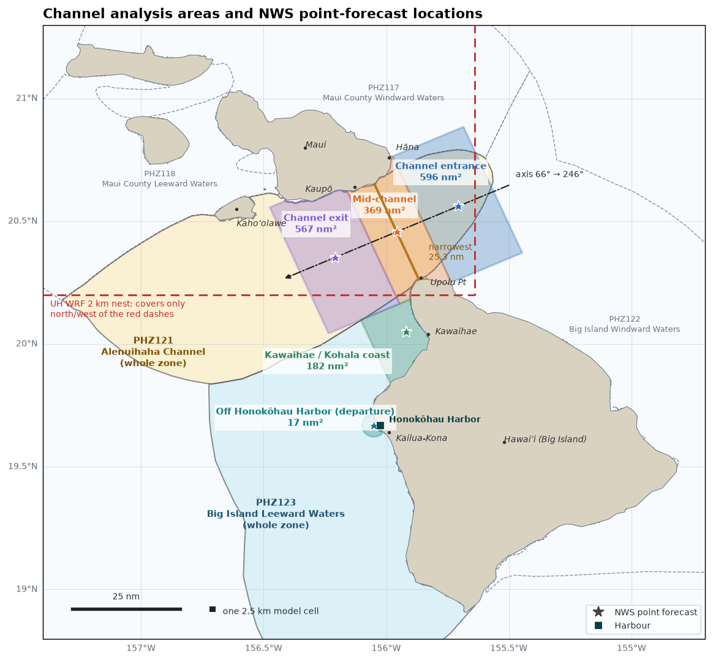
The areas this briefing analyses, used by every map and calculation on the page. The narrowest water between Maui and the Big Island is 25.3 nm, from Maui's Kaupō–Kīpahulu coast to Upolu Point (the orange line); the channel axis is perpendicular to it, 066°/246°. Mid-channel is the throat itself (±6.5 nm), with the entrance and exit 6.5–24 nm either side, a strip along the Kawaihae / Kohala coast, and water within 2.7 nm of a point 1.6 nm off Honokōhau Harbor. Stars mark where each area's NWS point forecast is taken. All areas are water only. The two marine zones they sit in, PHZ121 (Alenuihāhā Channel) and PHZ123 (Big Island leeward waters), are outlined and are also on the chart below. Tap the map for full size.
Model wind maps
Two models side by side for Maui to the Big Island (RRFS and NBM to start; pick any model, gust or REFS product in each menu). Colour is wind speed on each model's own 2.5 km grid, streamlines show direction; move over or tap a map to read the wind there.
Open the full map tool → REFS ensemble maps →
The full tool shows up to four maps on one time slider, plays the hours, and lists every model's run and forecast hours. The REFS maps show where the forecast is uncertain: the ensemble mean, its spread (1 standard deviation) and the chance of 20/30/35/40 kt.
Forecast wind by area
Forecast 10 m wind for each channel area from every model the briefing reads, on one chart. The shaded band is the range across the models and the NWS grid, and the grey line is their median, so a narrow band means they agree. The black line is the NWS Honolulu forecast (the grid the zone forecasts are written from). Tap a model to add its own line (dashed = gusts); tap RRFS last runs to see how the last six RRFS runs differ, which shows how much the forecast has been shifting. Drag the slider (or move over the chart) to read every model at one hour. The arrows under the chart show the models' average direction (weighted by speed), pointing downwind; red dashed lines mark the small craft advisory (25 kt) and gale (34 kt) thresholds. On the full-zone tabs the NWS zone forecast is drawn too: a dashed box for each period's wind range, a dotted line for its gusts and a strip for any headline; its wording is under the slider (tap NWS zone text to show it on the other tabs, using the zone the area is in).
RRFS extended is the 12Z run, which is also the newest RRFS run, so there is no separate RRFS latest line this time. When a newer short (18 h) run comes out, it is added as RRFS latest.
Model values are averaged over the area's grid points; gust is the 90th percentile across the area (the gustier part of it, not a single grid point). NWS values are at the area's reference point; for a whole zone they are the average of eight points spread through it. Speeds in knots. Build time Sat 14 Nov 06:30 HST.
Models: how often they run and which run is shown
| Source | What it is and how often it runs | Run shown | Age at build | Forecast hours used | Status |
|---|---|---|---|---|---|
| NWS | NWS Honolulu's gridded forecast, the grid the zone and point forecasts are written from; updated whenever forecasters issue (at least twice a day). | updated 2026-11-14T16:01Z Sat 06:01 HST | 0 h | ok | |
| RRFS extended | NOAA's new convection-allowing model, 2.5 km over Hawaii. 00/06/12/18Z runs go out 84 h (the 'extended' runs); the others go out 18 h. Every 3 h in today's pre-operational feed, hourly once operational on 14 Oct 2026. | 12Z Sat 14 Nov Sat 02:00 HST | 4 h | f001–f048 hourly, f051–f075 every 3 h | ok |
| NBM | National Blend of Models: a calibrated blend of many models, 2.5 km, a new run every hour. Continues after the RRFS change. | 15Z Sat 14 Nov Sat 05:00 HST | 2 h | f001–f048 hourly, f051–f072 every 3 h | ok |
| UH WRF | University of Hawaii WRF (run at UH, not NCEP, so not affected by the RRFS change): one run a day, 7 days; PacIOOS posts it about a day late. 2 km Maui-Oahu nest where an area fits in it, 6 km statewide otherwise. No gusts.; 2 km Maui-Oahu nest and 6 km statewide | 06Z Thu 12 Nov Wed 20:00 HST | 58 h | f055–f106 hourly, f109–f130 every 3 h | ok |
| REFS | Ensemble products built from the current and 6 h older RRFS runs plus the RRFS ensemble members; every 6 h (00/06/12/18Z), hourly out to 60 h, 2.5 km. | 12Z Sat 14 Nov Sat 02:00 HST | 4 h | f001–f060 hourly | ok |
RRFS extended is the newest 00/06/12/18Z run (out to 84 h). When a newer short run exists (out to 18 h) it is added as RRFS latest; the median and band use one RRFS, the extended. The pre-operational feed runs every 3 h; the operational RRFS (from 14 Oct 2026) runs hourly, and the page picks that up by itself. HiResW (ARW and FV3) is left out: NCEP retires it for Hawaii on 14 Oct 2026. NBM is a calibrated blend of many models rather than a model of its own. UH WRF has no gusts and publishes one run a day.
REFS ensemble by area
REFS is NOAA's high-resolution ensemble: it combines the latest and 6 h older RRFS runs with the RRFS ensemble members, so it can say how likely a wind is rather than giving one answer. Run 12Z Sat 14 Nov (Sat 02:00 HST), hourly to 60 h. Top: ensemble-mean wind with a band of ± one spread; the spread is the ensemble's standard deviation, so roughly two members in three fall inside the band. A wide band means the members disagree. In the Area average view the dotted lines are the lowest and highest area-average wind among the 11 runs at each time (every 3 h). They cover every run rather than two in three, so they often sit outside the band: the gap between them is the full range of outcomes the runs give. REFS's mean wind speed runs above the individual RRFS winds (about 1 kt mid-channel, up to ~5 kt along the Kohala coast where directions vary), so read it as the upper side of typical rather than the middle. Bottom: the chance of the wind reaching a threshold (tap a threshold to hide its line). Drag the slider to read every value at one hour.
The two buttons ask the same runs two different questions; they are not two separate opinions. REFS is made from the RRFS ensemble members plus the deterministic RRFS, and the 11 runs here are those runs (the five members of the latest run and of the run 6 h before, plus the deterministic RRFS). Area average asks each run for its average wind over this area and counts how many reach 25 kt (small craft advisory), 30 kt or 34 kt (gale), every 3 h to 60 h. Within ~20 nm (REFS) is NOAA's own product: the chance of 20, 30, 35 or 40 kt anywhere within roughly 20 nm of a point, so an area beside the jet can show a high chance while its own average wind stays light. For deciding whether the water you will be on reaches a threshold, the area average is the more direct answer.
ASCAT Coastal Winds (UHR)
This section shows the latest 12 coastal UHR ASCAT wind images. “Coastal UHR” (Ultra High Resolution, 12.5 km) products provide enhanced detail near coastlines, helping reveal localized wind features such as those in the Alenuihāhā Channel. Satellite orbits vary, so not all passes cover the area. Times are shown in UTC (Zulu). Hawaiʻi Standard Time (HST) is 10 hours behind UTC.
Tap the composite to open it full size.
ASCAT coastal wind images: NOAA / NESDIS Center for Satellite Applications and Research (STAR). Contains data Copyright 2026 EUMETSAT.
Sun & Moon
Lights on at sunset 17:43, off at sunrise 06:33 tomorrow: Rule 20 binds a vessel under way from sunset to sunrise, not from dark. At Honokōhau Harbor sunrise is the same and sunset 2 min later.
| Mid-channelHST | Today14 Nov | Tomorrow15 Nov | Mon16 Nov |
|---|---|---|---|
| Nautical dawn | 05:42 | 05:43 | 05:43 |
| Civil dawn | 06:09 | 06:10 | 06:10 |
| Sunrise | 06:32 | 06:33 | 06:33 |
| Local apparent noon (LAN) | 12:08 | 12:08 | 12:08 |
| Sun's altitude at LAN | 51.1° S | 50.9° S | 50.6° S |
| Sunset | 17:43 | 17:43 | 17:43 |
| Civil dusk | 18:06 | 18:06 | 18:06 |
| Nautical dusk | 18:33 | 18:33 | 18:33 |
| Daylight | 11h 10m | 11h 10m | 11h 09m |
24-hour HST. Civil twilight (sun 6° down) is the light left after sunset, enough to see other boats and the harbour entrance: the practical limit for coming in. By nautical dusk (12° down) the horizon is gone. Twilight is short this close to the tropics, about 22 minutes, so dark comes quickly after sunset. Local apparent noon (LAN) is when the sun crosses the meridian: highest in the sky, the time of a noon sight and of the strongest UV. The channel is 6° west of the meridian HST keeps time by, so LAN comes about 24 minutes after clock noon on average: from about 12:07 in early November to about 12:38 in mid February, as the equation of time runs through the year. The altitude is the sun's height above the horizon then, and which way it bears (south for most of the year; north from late May to mid July, when the sun passes overhead).
Moon
Waxing crescent, 25% lit · today it rises 11:12 · sets 22:19.
- First quarter Tue 17 Nov 01:49
- Full moon Tue 24 Nov 05:14
- Last quarter Mon 30 Nov 20:17
- New moon Tue 8 Dec 14:56
| Moon at noon | Rises / sets | |
|---|---|---|
| Today14 Nov | Waxing crescent, 26% lit | rises 11:12 sets 22:19 |
| Tomorrow15 Nov | Waxing crescent, 35% lit | rises 11:51 sets 23:11 |
| Mon16 Nov | First quarter, 44% lit | rises 12:28 |
The moon decides how dark a night crossing is: a full moon rises about when the sun sets and is up all night, a new moon not at all. It also sets the tides: spring tides, the largest ranges, follow new and full moon by a day or two; neaps follow the quarters. Hawaiʻi's tides are small (about 2 ft at Kawaihae, a little more at springs), so here they matter mostly for the currents along the coasts and at the channel's ends. Computed for mid-channel to within a few minutes; rise and set are the top of the disc on a sea horizon.
UV index
7Peak 7 (high) at 12:00 today · moderate or higher 10:00–14:00. At that level unprotected fair skin reddens in roughly 30 minutes: well inside a crossing. Sunscreen on the face, neck, ears and the backs of the hands, a hat and sunglasses: there is no shade on deck, and the water reflects part of the dose back up from below, where a brim does not reach.
The EPA's hourly UV index forecast for ZIP 96755 (Kapaʻau, North Kohala, on the channel's Big Island shore), today, HST; local apparent noon 12:08. Bands are the WHO's: 0–2 low, 3–5 moderate, 6–7 high, 8–10 very high, 11+ extreme. At 20°N the midday sun is high all year, so the index reaches very high or extreme on most clear days. About the UV index.
Experimental — Alenuihāhā Channel Wind Analysis
What drives the wind through the Alenuihāhā Channel, one ingredient at a time: the Pacific High that sets up the trades, the pressure gradient across the islands and across the channel itself, the wind feeding in and out, and the trade-wind inversion that caps it. Each part gives the latest numbers first; the method is under How it works.
Pacific High · Isobars over the channel · Station pressure gradient · Buoy pressure gradient · Inflow and outflow · Trade-wind inversion
Synoptic-Scale Forcing: the Pacific High
How it works
The Pacific High's lobes are found automatically in the latest NOAA GFS sea-level pressure (0.25°) over 25–50°N, 125–180°W, at T−24h, now (T0), T+24h and T+48h, and ranked by how hard each pushes toward the channel: the pressure difference between the lobe and the channel over their distance (the gradient), and how well that push lines up with the channel axis (066°/246°). Push along the axis is the geostrophic wind that gradient implies, resolved along the channel. A lobe's size is the area within N hPa of its peak (red outline on the maps).
Where the high is going
Lobe centres at each time over the current isobars; the dashed line follows the top-ranked lobe.
The analysis at each time
Top lobe by time
| Time | Valid (HST) | High centre | Pressure | Distance to channel | Gradient to channel (hPa/1000 nm) | Off channel axis | Push along the axis |
|---|---|---|---|---|---|---|---|
| T−24h | Fri 13 Nov 02:00 | 36.8°N 180.0°W | 1026.7 hPa | 1,593 nm | 5.6 | 55° | 5 kt |
| T0 (now) | Sat 14 Nov 02:00 | 39.5°N 173.5°W | 1034.5 hPa | 1,457 nm | 11.4 | 71° | 6 kt |
| T+24h | Sun 15 Nov 02:00 | 35.2°N 158.0°W | 1033.8 hPa | 895 nm | 16.5 | 73° | 8 kt |
| T+48h | Mon 16 Nov 02:00 | 34.2°N 146.5°W | 1032.7 hPa | 968 nm | 12.8 | 32° | 18 kt |
Local Isobar Field over the Channel
How it works
A flat pressure surface is fitted to the GFS sea-level pressure over the ocean in a ~180 nm box around the channel (land excluded), for T−24h, now, T+24h and T+48h. Its slope gives the geostrophic wind: speed, direction, the angle to the channel axis (066°/246°) and the part along it. The box spans the whole channel, so there is one value per time; differences between the entrance, mid-channel and exit come from the high-resolution models. Geostrophic wind ignores friction and the terrain's squeeze, so the real channel wind can be well above or below it.
By time
| Time | Valid (HST) | Speed kt | From °T | Off axis | Along axis kt | Fit |
|---|---|---|---|---|---|---|
| T−24h | 2026-11-13 02:00 | 33 | 120° | 54° | 20 | Moderate (R² 0.94, RMS 0.29 hPa) |
| T0 (now) | 2026-11-14 02:00 | 26 | 120° | 54° | 15 | Moderate (R² 0.93, RMS 0.24 hPa) |
| T+24h | 2026-11-15 02:00 | 34 | 126° | 60° | 17 | Moderate (R² 0.94, RMS 0.29 hPa) |
| T+48h | 2026-11-16 02:00 | 30 | 131° | 65° | 13 | Moderate (R² 0.93, RMS 0.27 hPa) |
Pressure Gradient Across the Channel (Stations)
Why this is steeper than the isobars above. The GFS field in Local Isobar Field has pressure falling 1.5 hPa per 100 nm toward 210°; the stations measure 4.4 toward 181°: in about the same direction and about 3 times steeper, and both are right at their own scale. GFS fits a 180 nm box on a 0.25° grid that cannot resolve the islands; the stations sit on either side of the islands' own pressure pattern, higher on the windward side where the trades pile up against Haleakalā and Kohala and lower in the lee. That local difference is what drives the channel jet, so it is the one to watch here. RRFS, at 2.5 km, puts 2.6 hPa per 100 nm toward 195° at the same stations, about 59% of what they measure: a model that resolves the islands sees the steep local gradient too.
How it works
The push through the channel measured at its own scale. Each hour a flat pressure surface is fitted through the stations around the channel that report sea-level pressure (Kahului airport (PHOG), Hamoa (near Hana) (023HI), Iole (near Upolu Pt) (075HI), Kawaihae harbor (1617433), Kona airport (PHKO), Lanai airport (PHNY)), after removing each station's constant offset over the last five days. Pressure drop toward the exit is how fast pressure falls along the channel axis toward the exit (066°/246°): the forcing that accelerates air through the channel. Channel-wind potential is the speed air would reach running down that drop from the entrance to the exit (~49 nm), √(2Δp/ρ): an upper bound, since friction and mixing hold the real wind below it, but it rises and falls with the forcing. The dashed red line is the same calculation from RRFS's forecast pressure at the same stations, so you can see whether the observed gradient is running ahead of the model or behind it. No geostrophic wind is given: this close to the tropics and the islands the local gradient is far from geostrophic balance.
The fitted isobars now
Magenta: the fitted isobars (hPa, every 1; thin lines at the half), arrow toward low pressure. Dashed: the channel throat. Values: each station's pressure less its 5-day offset; grey = no report this hour.
Regional Pressure Gradient (Buoys)
How it works
Buoy 51000 (23.5°N, 153.8°W) lies northeast of the islands and buoy 51002 (17.1°N, 157.8°W) southwest of them, about 450 nm apart. Their pressure difference is the large-scale push across the Hawaiian chain; their winds are the trade flow going in and coming out. The angle "off the channel axis" is between each buoy's wind and the axis (066°/246°); winds lined up with the channel funnel through it more readily.
| Latest Sat 05:40 | 3 h mean | 24 h mean | 24 h typical (middle half) | 24 h highest | |
|---|---|---|---|---|---|
| Pressure difference 51000 minus 51002 | 5.0 hPa | 5.3 | 5.4 | 5.1–5.7 | 6.3 Fri 16:30 |
| Gradient across the islands | 11.2 hPa/1000 nm | 11.9 | 12.1 | 11.4–12.7 | 14.1 Fri 16:30 |
| Geostrophic wind from that gradient | 19 kt | 20 | 21 | 19–22 | 24 Fri 16:30 |
| Inflow wind, 51000 | 16 kt | 15 | 15 | 14–16 | 17 Fri 05:50 |
| Inflow gust, 51000 | — | 18 | 19 | 17–19 | 23 Fri 07:00 |
| Inflow off channel axis | 4° | 7° | 12° | ||
| Outflow wind, 51002 | 19 kt | 21 | 21 | 19–21 | 23 Fri 06:40 |
| Outflow gust, 51002 | — | 26 | 27 | 25–29 | 33 Fri 11:30 |
| Outflow off channel axis | 4° | 5° | 6° |
The last 24 hours
Inflow and Outflow Wind
Wind and gusts at both buoys over 24 h, and how far each is from the channel axis (0° = straight down the channel; within 15° is well lined up).
Trade-Wind Inversion (Hilo soundings)
How it works
The inversion is a lid on the trade winds: a strong, low one squeezes the flow through the channel and speeds it up; a weak or missing one lets it mix upward. Each twice-daily balloon from Hilo (91285) is searched for a layer below ~4 km that warms and dries upward. Warming Δθ is the jump in potential temperature across it (stability), Drying ΔRH the drop in relative humidity, and the strength index (0–10) combines them, favouring sharp, dry layers of moderate thickness (weak below 3, moderate 3–6, strong 6 or more). Supportive lids usually have a base near 1.5–2.5 km, 100–600 m thick, Δθ of 2 K or more and ΔRH of 15–30% or more. Check the Skew-T diagrams for the full profile.
| Launch (HST) | Inversion base–top | Thickness | Warming Δθ | Drying ΔRH | Strength (0–10) | Wind 925–850 hPa |
|---|---|---|---|---|---|---|
| Thu 12 Nov 14:00 | 1,886–2,021 m (6,188–6,631 ft) | 135 m | 3.6 K | 59% | 9.6 strong | 7 kt |
| Fri 13 Nov 02:00 | 2,059–2,184 m (6,755–7,165 ft) | 125 m | 2.7 K | 44% | 6.0 strong | 7 kt |
| Fri 13 Nov 14:00 | 1,995–2,088 m (6,545–6,850 ft) | 93 m | 4.2 K | 40% | 9.9 strong | 6 kt |
| Sat 14 Nov 02:00 | 1,900–1,996 m (6,234–6,549 ft) | 96 m | 6.0 K | 72% | 10.0 strong | 6 kt |
Strength rates the inversion itself: weak below 3, moderate 3–6, strong 6 or more.